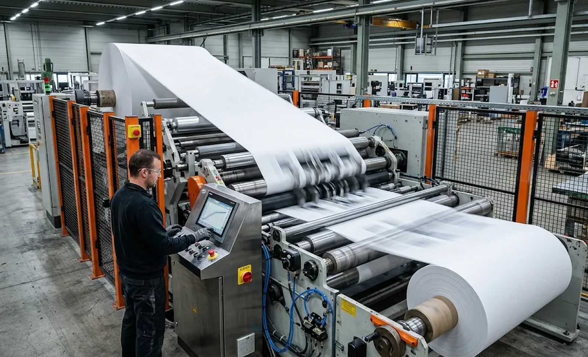
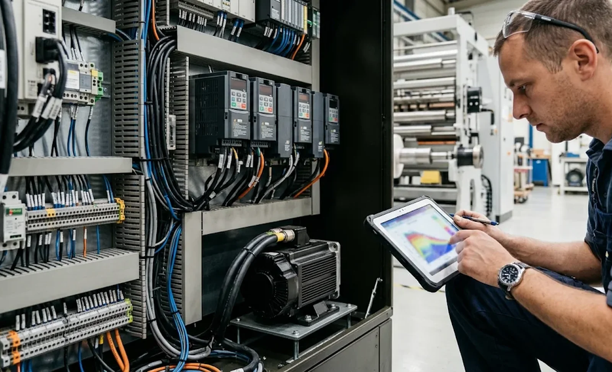

Published November 8, 2026 | By HDPTH Technical Editorial Team

Most slitter rewinder quotations are built around a top speed, and most buyers compare machines on that number. Yet a converting line spends surprisingly little of its life at constant speed: it accelerates from stop after every splice and core change, ramps down for defect removal and quality checks, and crawls through setups. How a machine accelerates and decelerates — the ramp — governs tension stability, web breaks, splice survival and finished-roll quality at least as much as the headline speed. Ramp performance rarely appears on a specification sheet, so it has to be asked for, specified and tested. This guide explains what happens to the web during a ramp, what separates a well-profiled machine from a poorly tuned one, and how to write acceleration and deceleration performance into a new machine order.
What acceleration does to web tension
Web tension is a force balance, and acceleration disturbs the balance. To speed up any rotating mass — rollers, shafts, the winding roll — the drives must deliver extra torque proportional to inertia and angular acceleration. On a well-commissioned machine the unwind brake and rewind drive provide that torque themselves, and the web between them sees almost nothing. On a poorly compensated machine, the web supplies the difference: tension spikes upward when the machine accelerates and sags when it decelerates, by an amount set by the total system inertia and the steepness of the ramp. A machine that holds tension to ±2% at constant speed can easily overshoot by 10–20% during a 50 m/min-per-second ramp if inertia compensation is absent or mistuned. The consequences follow the physics: webs break at their weakest point mid-ramp, slit edges show defects that began as tension excursions, splice tails fail on restart, and the rewind takes up each disturbance as density variation in the roll. Lightweight elastic materials and thin films show it first, but no web is immune once ramps are steep enough.
Ramp profiles: linear, S-curve and torque-limited
Not all ramps are equal. A purely linear ramp applies constant acceleration with abrupt changes at the start and end, and each of those corners injects a jerk into the web and the mechanics. An S-curve profile — the standard on well-specified converting lines — blends into and out of the acceleration, spreading the change and keeping the tension controller inside its working range. The third profile is accidental: a torque-limited ramp where the drive reaches its current limit, the actual speed falls behind the setpoint and the tension loop saturates. Typical production ramp rates on converting machinery sit between 30 and 80 m/min per second; non-stop turret indexing and zero-speed splicing demand faster transitions, and they are precisely where uncompensated machines shed their good behaviour. Ask each supplier two things: the guaranteed ramp rate with tension held in a stated band, and whether ramps are S-curve profiled as standard. The answers separate machines that can reach top speed from machines that can actually work at it.

Inertia compensation and drive sizing
Inertia compensation is the mechanism that makes steep ramps possible. The drive calculates — or is taught — the inertia of each driven section and adds feed-forward torque during acceleration, so the tension controller only has to trim rather than fight. On the rewind side the arithmetic is unforgiving: winding roll inertia grows with the square of roll diameter, so accelerating a full roll can demand several times the torque needed at the core, and the compensation must track diameter continuously. This is why diameter calculation accuracy feeds directly into ramp quality; a machine that mis-tracks roll diameter will over- or under-compensate exactly at the end of the roll, where winding quality matters most. Buyers should ask three questions. Is inertia compensation standard on every driven zone or an optional extra? Is it auto-tuned from commissioning identification runs, and can it be re-tuned after mechanical changes? And are the motors sized on peak torque — the acceleration case — rather than continuous duty alone, because a drive sized to top speed only will compromise precisely on ramps.
Winding quality through start-stop cycles
Ramp events cluster at the points where roll quality is most fragile. Every start accelerates a fresh, small roll from zero through the speed range: inertia is low, but the core region is soft and marks easily. Every approach to full roll combines maximum inertia with maximum stored elastic energy in the web, so tension overshoots there translate directly into telescoping or dished rolls. Turret indexing and splicing add their own ramps on a schedule, hundreds of times per shift on a non-stop line. Production patterns amplify the exposure: short runs, sample rolls and quality stops put dozens of start-stop cycles into every shift, and each one is a small winding experiment. Machines with well-profiled ramps and accurate compensation accumulate none of this into the roll; machines without it show tapered edges, uneven roll hardness and core-area defects that operators learn to work around. When comparing machines, count the start-stop cycles your production mix really implies, not just the metres per minute.
Specifying and testing ramp performance
Ramp performance is bought in the requirement specification, not tuned afterwards. Four clauses do the work. First, a guaranteed acceleration and deceleration rate — for example 0 to 600 m/min in 10 seconds — with the tension band it must hold, stated separately from the steady-state band: ±5% during ramps against ±2% at constant speed is a realistic and testable pair. Second, a start-stop endurance clause: a stated number of consecutive cycles at production roll weight without tension fault or web break. Third, a documentation clause: ramp runs recorded from the tension transducers and delivered as data files, not witnessed only. Fourth, an acceptance clause placing a repeat of the ramp tests in the site acceptance test, because transport, re-rigging and local power conditions all shift drive tuning. At the factory acceptance test, ask to see the HMI tension trend while the machine ramps; a machine that holds its band through the whole profile, core to full roll, is the one that will hold quality on your product.
Related guides extend this picture: the Slitter Rewinder Motor Drive Selection: Buyer’s Guide covers how drive and motor sizing decisions feed the torque available for ramps, and the Load Cell vs Dancer Tension Control for Slitter Rewinders explains how each feedback method responds to ramp disturbances. To see these principles applied across a machine range, review the HDPTH high-speed slitting machines series.
Need a Machine That Holds Tension Through Every Ramp?
Send HDPTH your speed targets, ramp requirements and production pattern. Our application engineers will propose the drive sizing, inertia compensation and ramp profile we would build into the machine — and test them in the FAT protocol before the order is placed.
Submit Your Project InquiryFrequently asked questions
How fast can a slitter rewinder accelerate?
Production converting machines typically ramp at 30–80 m/min per second, with faster transitions required for non-stop turret indexing and zero-speed splicing. The meaningful figure is not the rate alone but the rate combined with the tension band it holds: a machine that reaches speed quickly but overshoots tension by double digits during the ramp has not solved the problem. Ask suppliers for a guaranteed ramp rate with an explicit tolerance band.
Why does web tension spike during acceleration?
Accelerating the rollers, shafts and winding roll requires torque proportional to system inertia and angular acceleration. If the drives do not supply that torque through inertia compensation, the web supplies it instead, so tension rises during acceleration and falls during deceleration. A machine that holds ±2% at constant speed can overshoot 10–20% on a steep ramp when compensation is absent or mistuned.
What is inertia compensation on a slitter rewinder?
A feed-forward drive function that calculates the inertia of each driven section and adds torque during acceleration so the tension controller only has to make small corrections. On the rewind side it must track roll diameter continuously, because winding roll inertia grows with the square of diameter and the compensation demand at full roll is several times that at the core.
Does acceleration affect finished roll quality?
Yes, through start-stop cycles. Starts accelerate a fresh, small roll through the speed range with a soft core region, while approaches to full roll combine maximum inertia with maximum stored web energy, where tension overshoot becomes telescoping or dished rolls. Short-run production with frequent quality stops accumulates dozens of these cycles per shift, so ramp quality feeds directly into roll hardness, edge condition and core-area defects.
How should ramp performance be written into a machine order?
With four clauses: a guaranteed acceleration and deceleration rate with a stated tension band (for example ±5% during ramps against ±2% steady state), a start-stop endurance test at production roll weight, tension trend data from the FAT delivered as files, and a repeat of the ramp tests in the site acceptance test. Specify the ramp separately from top speed, because they are independent performances.